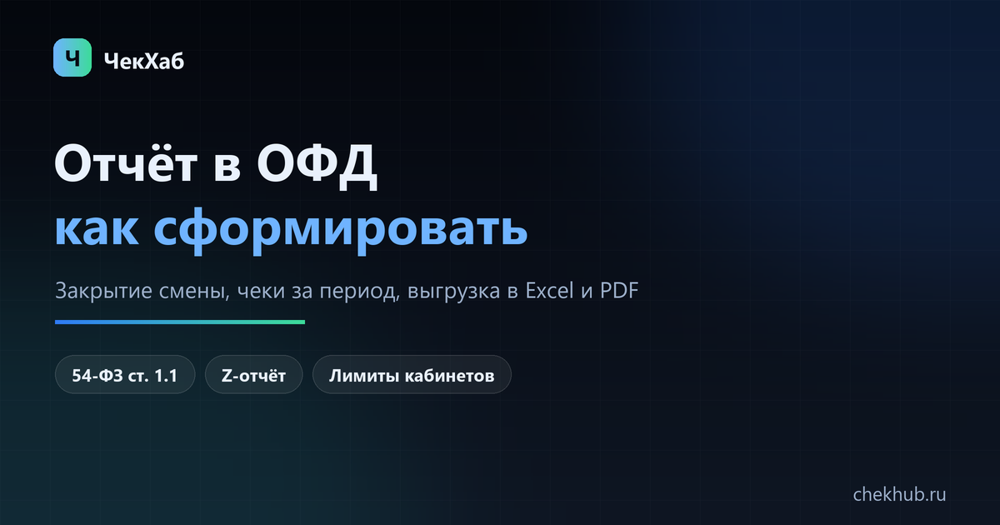

Отчёт в ОФД: как сформировать, посмотреть и выгрузить
В кабинете ОФД лежат четыре разных документа, и «отчёт» у кассира, бухгалтера и руководителя — это разные файлы. Ниже — как сформировать каждый, где он находится у шести операторов, почему выборка бывает пустой и что делать, когда нужен год по всем кассам.

Отчёт о закрытии смены касса формирует сама — ОФД лишь хранит и отдаёт его копию. Поэтому «в ОФД нет отчёта» почти всегда значит «касса его не передала», а не «оператор потерял».
Если разбираться некогда
от 1 500 ₽ за кассу за месяц; год и сеть считаем по количеству касс и месяцев. Срок 1–3 рабочих дня на небольшую сеть.
Гарантия: если ваш ОФД не отдаёт данные за нужный период — вернём предоплату.
Как выглядит результат: пример файла выгрузки (CSV, данные тестовые).
Коротко: «отчёт в ОФД» — это четыре разных документа
Когда говорят «нужен отчёт из ОФД», обычно имеют в виду одно из четырёх, и от вида зависит и кнопка в кабинете, и то, что получится на выходе. По статье 1.1 закона 54-ФЗ все они — фискальные документы:
| Документ | Кто формирует | Что внутри | Где взять |
|---|---|---|---|
| Кассовый чек | Касса при каждом расчёте | Состав покупки, сумма, способ и признак расчёта, реквизиты покупателя | Письмо от ОФД, приложение ФНС, кабинет оператора |
| Отчёт о закрытии смены (его и называют Z-отчётом) | Касса в конце смены | Выручка за смену, суммы наличными и электронными, число чеков, показания счётчиков | Кабинет ОФД, касса (бумажная копия), товароучётка |
| Отчёт о текущем состоянии расчётов (X-отчёт) | Касса по запросу, смена не закрывается | Промежуточные суммы с начала смены | Касса; в ОФД передаётся не всегда |
| Подтверждение оператора | ОФД | Признак, что документ принят оператором | Кабинет ОФД, выгрузка документов |
Путаница начинается на слове «отчёт». Кассир под отчётом понимает Z-отчёт за смену, бухгалтер — реестр чеков за период для сверки, а руководитель — сводку по выручке точек. В кабинетах операторов это разные экраны, и получаются они разными кнопками.
Зачем отчёт в ОФД, если касса стоит рядом
- Сверка выручки. Отчёт по сменам сравнивают с инкассацией, эквайрингом и данными 1С. Расхождение видно сразу: сумма за день в отчёте ОФД — это то, что налоговая увидит в любом случае.
- Восстановление документов. Потеряли смену при переустановке программы, поменяли учётку, закрылся доступ к старому кабинету — документы остаются у оператора, их можно забрать копией.
- Авансовые отчёты и подтверждение расходов. Сотрудник расплачивался корпоративной картой: реестр чеков за период заменяет пачку бумажек, если в нём есть реквизиты и суммы.
- Проверка точек и подрядчиков. Собственник видит по отчётам, закрывают ли смены, нет ли чеков «задним числом» и не работают ли кассы мимо ОФД.
Что в типовом отчёте есть, а чего нет
| Данные | В отчёте ОФД | Пояснение |
|---|---|---|
| Дата, время, номер смены | есть | У каждого документа свои дата и время, у смены — номер и период |
| Сумма, способ расчёта (наличные / электронно), признак (приход, возврат) | есть | Основа для сверки с банком и кассовой дисциплиной |
| ФН, ФД, ФПД, номер кассы, точка | есть | По этим реквизитам чек находится в базе ФНС и в кабинете |
| Ставки и суммы НДС | есть в чеке | В сводке по смене — итогами, по позициям — только в реестре чеков |
| Товарные позиции | не всегда | Зависит от тарифа и формата выгрузки: в сводных отчётах позиций нет вовсе, в реестре они могут быть или отсутствовать |
| Контрагент, себестоимость, склад | нет | Этого в фискальном документе не бывает — только в учётной системе |
Отсюда практическое правило: для сумм хватает отчёта по сменам, для позиций нужен реестр чеков. Если в файле нет товаров, дело не в ОФД, а в выбранном виде отчёта — подробнее в статье о выгрузке с позициями.
Как сформировать отчёт в личном кабинете ОФД: шесть шагов
- Войти в кабинет оператора. Не в товароучётку и не в банк — в кабинет того ОФД, с которым заключён договор. Проверить, что открыт нужный абонентский ящик: у одного владельца их бывает несколько, и касса может числиться в другом.
- Выбрать организацию и точку. Если точек несколько, фильтр «все кассы» даст сводку, а не реестр по каждой. Для сверки с банком обычно нужна одна точка, а для налоговой — все.
- Открыть раздел с документами ККТ. Названия у операторов разные: «Документы», «Чеки», «Отчёты», «Смены». Ориентир — рядом должны стоять фильтры по кассе и дате.
- Задать период. Ключевое ограничение: глубина периода в тарифе. Год одним отчётом в большинстве кабинетов не выгрузить, придётся брать частями — по месяцам или кварталам.
- Выбрать вид отчёта. Три разных: реестр чеков, отчёты о закрытии смен, сводка по суммам. Если нужны товары — искать реестр с позициями, в сводке их не будет никогда.
- Сформировать и скачать. Excel, CSV или PDF. Excel удобен для сверки, CSV — для загрузки в 1С, PDF — для подшивки. Файл лучше сразу переименовать: «точка_период_кассы».
Первые два шага — самые частые причины «отчёт пустой»: сотрудник смотрит сводку по другой точке или по другому абонентскому ящику. Прежде чем искать ошибку, проверьте фильтры и заголовок организации в шапке кабинета.
Где искать отчёт у разных операторов
Интерфейсы меняются, поэтому ниже — не пункты меню, а ориентиры, по которым раздел находится за минуту:
| Оператор | Где искать | Что обычно даёт |
|---|---|---|
| Платформа ОФД | Раздел с документами и отчётами по кассе; отдельные отчёты по сменам | Реестр чеков, смены, суммы; выгрузка Excel/PDF |
| Такском | Кабинет «Такском-Касса»: документы ККТ по кассам и периодам | Реестр, отчёты о закрытии смены, выгрузка в файл |
| Первый ОФД | Личный кабинет: чеки и смены, фильтр по заводу-изготовителю и точке | Реестр чеков, смены, суммы наличными и электронными |
| СБИС / Saby | Раздел ОФД (не «Отчётность»): документы касс и задачи по ним | Реестр, смены; доступ зависит от роли сотрудника |
| Астрал ОФД | Отчёты в личном кабинете оператора, по кассе и периоду | Реестр чеков, сводки, выгрузка файлов |
| Яндекс ОФД | Кабинет ОФД: документы и аналитика по кассам | Реестр чеков, сводки по суммам и сменам |
Если касса стоит не у того оператора, в кабинете не будет ни чеков, ни отчётов, сколько ни фильтруй. Номер ОФД и срок действия фискального накопителя видны в карточке кассы; сравнить условия операторов можно в сравнении ОФД.
Отчёт о закрытии смены (Z-отчёт): что в нём и зачем
Отчёт о закрытии смены касса формирует сама — при закрытии смены или автоматически, если смена идёт больше суток. В ОФД попадает копия: тот же документ с теми же реквизитами, только полученный оператором. В отчёте видно:
- количество кассовых чеков за смену и суммы расчётов;
- наличные и электронные отдельно — это основа сверки с инкассацией и эквайрингом;
- показания счётчиков регистраций и сумм на момент закрытия смены;
- номера фискального накопителя и документа, дату, время, номер смены.
Z-отчёт не заменяет кассовую книгу. Кассовая книга — отдельный регистр для учёта наличных (порядок ведения — указание Банка России № 3210-У), ОФД её не формирует и не заполняет. И обратное неверно: книга не заменяет фискальный отчёт, если налоговая запросит документы по кассе.
Смену нельзя держать открытой бесконечно: по статье 4.7 закона 54-ФЗ отчёт о закрытии смены формируется не позднее 24 часов с момента открытия, иначе касса перестаёт формировать чеки. Круглосуточная точка должна закрывать смену раз в сутки — обычно это делает кассир или автоматическое правило в товароучётке.
Почему отчёт не формируется: шесть причин
| Что видно | Причина | Что делать |
|---|---|---|
| Смен за период нет вообще | Смены не закрывали: точка работает «одной сменой» неделями или касса закрывается только при выключении | Проверить на кассе, закрывается ли смена; настроить ежедневное закрытие |
| Чеки есть, отчётов о смене нет | Отчёт о закрытии смены не дошёл до ОФД: касса была без связи в момент закрытия | Дождаться отправки после восстановления связи; проверить очередь документов на кассе |
| За период пусто, за соседний — полно | Слишком длинный период для тарифа: кабинет режет выборку | Дробить на месяцы или кварталы; уточнить глубину в тарифе |
| Раздел не открывается или пуст | У сотрудника нет прав на документы ККТ, либо открыт другой абонентский ящик | Проверить роль в кабинете, попросить администратора выдать доступ к ОФД |
| Кассы «нет в списке» | Касса обслуживается у другого оператора или перерегистрирована на другую организацию | Посмотреть оператора в карточке кассы, войти в нужный кабинет |
| «Смена превысила 24 часа» | Смена не закрыта вовремя — касса не формирует чеки | Закрыть смену, проверить настройку автозакрытия |
Отдельный случай — касса работала без интернета. Тогда документы сначала копятся в фискальном накопителе и уходят оператору позже; в кабинете они появятся с задержкой, а не пропадут. Если документ нужен срочно, его можно распечатать на кассе или выгрузить из накопителя, но для налоговой важна именно переданная копия.
Лимиты кабинетов: где упирается выгрузка
Пять ограничений встречаются почти у всех операторов, хотя цифры у каждого свои и меняются вместе с тарифом:
- глубина периода — сколько назад кабинет отдаёт документы на бесплатном или базовом тарифе;
- число строк в отчёте — большая выборка формируется частями или обрезается;
- число выгрузок — суточный лимит на формирование файлов;
- состав данных — позиции чеков доступны не в каждом тарифе;
- формат — Excel, CSV, PDF, XML; для загрузки в 1С нужен файл определённой структуры, а не «просто таблица».
Проверять надо не рекламную страницу тарифа, а раздел «Отчёты» в кабинете: там видно, за какой период выборка реально формируется. Если нужен год по десяти кассам с позициями, разумнее посчитать трудозатраты: 12 месяцев × N касс × 20 минут — и сравнить с готовой выгрузкой под ключ.
Как забрать всё сразу: кассы, точки, год
Три рабочих пути, от простого к системному:
- Частями по кабинету. Месяц за месяцем, касса за кассой — подходит для разовой сверки и пары касс.
- API оператора. Если у ОФД есть API, документы забираются скриптом: период и список касс задаются в запросе. Нужен разработчик и доступ к API в тарифе.
- Выгрузка под ключ. Когда касс много и нужен единый файл с проверкой дублей и сверкой сумм. Тогда отчёт по сменам, реестр чеков и позиции собираются в одну таблицу — как это выглядит, показано в примере файла.
Если отчёты нужны регулярно, дешевле настроить сбор один раз и получать файл по расписанию, чем каждый месяц повторять ручную работу.
Сколько хранить отчёты и что подшивать
Оператор и продавец хранят фискальные документы 5 лет (статьи 4.6 и 5 закона 54-ФЗ). Для налогов документы нужны 4 года (пункт 1 статьи 23 НК РФ) — то есть фискальный срок перекрывает налоговый с запасом. Сроки по видам чеков и что делать, если период уже закрыт, разобраны в статье «Сколько хранятся чеки в ОФД».
Практический минимум, который стоит держать у себя: отчёты о закрытии смен за каждый день, реестр чеков за периоды сверки и файлы, по которым сдавалась отчётность. Скачанный один раз файл надёжнее кабинета: доступ к учётке может закрыться раньше, чем истекут пять лет.
Частые вопросы
Что такое отчёт в ОФД?
Общее слово для нескольких фискальных документов: отчёта о закрытии смены (Z-отчёт), отчёта о текущем состоянии расчётов (X-отчёт), реестра кассовых чеков за период и подтверждения оператора. По статье 1.1 закона 54-ФЗ все они относятся к фискальным документам.
Чем отчёт ОФД отличается от Z-отчёта?
Z-отчёт — это отчёт о закрытии смены: его формирует касса, в нём выручка за смену, суммы наличными и электронными, число чеков и показания счётчиков. В ОФД хранится копия этого документа. Отчёт ОФД — более широкое понятие: так называют и реестр чеков за период, и сводку по суммам.
Как сформировать отчёт о закрытии смены в ОФД?
Специально формировать его в кабинете не нужно: касса создаёт отчёт при закрытии смены и передаёт оператору. В кабинете остаётся выбрать кассу и период и выгрузить готовые отчёты. Если отчётов нет — смены не закрывали либо касса была без связи в момент закрытия.
Можно ли выгрузить отчёт из ОФД за год одним файлом?
Обычно нет: у тарифов есть глубина периода и лимит числа строк. Год собирают частями — по месяцам или кварталам — либо забирают документы через API оператора. Если касс несколько, разумнее один раз настроить сбор в единый файл.
Почему в отчёте ОФД нет товарных позиций?
Потому что выбран сводный отчёт по сменам или по суммам: в нём только итоги. Позиции есть в реестре кассовых чеков, и то не в каждом тарифе. Если нужны товары по каждой покупке, проверяйте, отдаёт ли оператор реестр с позициями.
Сколько хранятся отчёты в ОФД?
Фискальные документы оператор хранит 5 лет (статьи 4.6 и 5 закона 54-ФЗ), тот же срок — у продавца. Для налоговых целей документы нужны 4 года (пункт 1 статьи 23 НК РФ). Скачанные файлы стоит хранить у себя: доступ к кабинету может закрыться раньше.
Заменяет ли отчёт ОФД кассовую книгу?
Нет. Кассовая книга — отдельный регистр для учёта наличных, порядок её ведения установлен указанием Банка России № 3210-У. ОФД её не формирует. И наоборот: книга не заменяет фискальные документы, если налоговая запросит данные по кассе.
Что делать, если кабинет пишет «смена превысила 24 часа»?
Закрыть смену на кассе: по статье 4.7 закона 54-ФЗ отчёт о закрытии смены формируется не позднее 24 часов с момента открытия, иначе касса перестаёт формировать чеки. Дальше стоит настроить ежедневное закрытие смены, особенно если точка работает круглосуточно.